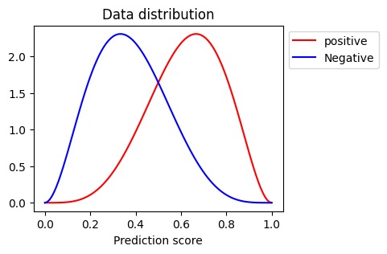

不均衡データに対する二値分類評価指標の挙動
MachineLearning
Python
Experiment
Abstract
不均衡データでの評価指標の信頼性検証
機械学習の二値分類問題において、教師データの陽性・陰性の割合が大きく異なっている不均衡データがよく扱われる。不均衡データは予測を難しくすることは周知の事実だが、加えて様々な評価指標に対してもミスリーディングを生み出すことがある。
そこで、不均衡データに対する評価指標の挙動を確認していく。
評価指標
まずは、評価指標のおさらいから入る。
混同行列
二値分類での評価指標の多くは混同行列(Confusion matrix)を用いて算出されている Table 1 。混同行列は教師データのラベルおよび予測モデルによるラベルの二軸で解析集団のクロス集計をとった行列のことである。
行列の各要素にはそれぞれ定義がされており、教師データに対して予測モデルが正しく予測できたかどうかがカウントされている。
- TP: 陽性と予測して、真に陽性だった数
- FP: 陽性と予測して、真は陰性だった数
- FN: 陰性と予測して、真は陽性だった数
- TN: 陰性と予測して、真に陰性だった数
| Actual | |||
|---|---|---|---|
| (+) | (-) | ||
| predict | (+) | TP | FP |
| (-) | FN | TN | |
重要な指標
二値分類においてよく使われる指標は Table 2 である。一般的にはROC-AUC、F1-scoreをそのモデルの総合的な評価として用いることが多い。
| 指標 | 記号 | 数式 | 意味 |
|---|---|---|---|
| 正答率 | Accuracy | \(\frac{TP + TN}{TP + FP + FN + TN}\) | 正しく予測できた割合 |
| 適合率・陽性的中率 | Precision, PPV | \(\frac{TP}{TP + FP}\) | 陽性と予測した中で正しく予測できた割合 |
| 陰性的中率 | NPV | \(\frac{TN}{FN + TN}\) | 陰性と予測した中で正しく予測できた割合 |
| 真陽性率・再現率・感度 | Recall, Sensitivity, TPR | \(\frac{TP}{TP + FN}\) | 真に陽性群の内、正しく予測できた割合 |
| 真陰性率・特異度 | Specificity, TNR | \(\frac{TN}{FP + TN}\) | 真に陰性群の内、正しく予測できた割合 |
| F1-score | \(\frac{2 TP}{2 TP + FP + FN}\) | 陽性的中率と感度の調和平均 | |
| マシューズ相関係数 | MCC | \(\frac{TP \times TN - FP \times FN}{\sqrt{(TP + FP) (TP + FN) (TN + FP) (TN + FN)}}\) | 不均衡データに対して有効とされている教師データと予測モデル間の相関係数 |
| G-mean | \(\sqrt{TPR \times TNR}\) | 感度と特異度の幾何平均 | |
| ROC-AUC | TPR, FPR(偽陽性率)の関係性を曲線にし、その面積をとったもの | ||
| PR-AUC | 感度・陽性的中率の関係性を曲線にし、その面積をとったもの |
実験方法
仮想データ
仮想データは乱数生成によって作成したデータを用いる。二値分類の予測値\(y\)はロジスティック関数が絡んでいることが多いため、\(y\)はベータ分布に従うと仮定する。
\[ y \sim Beta(\alpha, \beta) \]
ベータ分布について、真に陽性群のパラメータを\((\alpha, \beta) = (5, 3)\)、真に陰性群のパラメータを\((\alpha, \beta) = (3, 5)\)とする。
※均衡データに対してROC-AUCが0.85程度になるように調整した。
サンプルサイズは10,000で、陽性と陰性の比率については、陽性の割合を\({ \{ 0.5, 0.4, 0.3, 0.2, 0.1, 0.01 \} }\)の6パターンに分けて実験する。
評価
評価指標 Table 2 の内ROC-AUCとPR-AUC以外は混同行列を基準に算出するため、予測値\(y\)を陽性 or 陰性に振り分ける閾値を定義する必要がある。母集団分布上では一律に0.5としても良さそうだが、今回はYouden Indexによって閾値を決める。
Youden Index
Youden Indexとは、ROC-AUC曲線上で対角線の間の垂直距離が最大になる閾値のことである。これを用いることで感度・特異度がともに高い閾値を選ぶことができる。
\[ \max_{threshold} 感度 + 特異度 - 1 \]
データ生成→評価指標算出のプロセスを100回行い、それらの振る舞いを評価する。
実験結果
ROC-AUC曲線、PR-AUC曲線の変化
まずは、1回の試行での仮想データを使ってROC-AUC曲線およびPR-AUC曲線を確認した。これを見ると、ROC-AUC曲線は不均衡具合が強くなっても大きく指標が変化しない。一方で、PR-AUC曲線は不均衡具合が強くなると曲線も大きく歪むことが見てとれる。
このことから、以下のことが言える。 - ROC-AUC曲線は教師データのバランスには言及せずに、あくまで予測モデルが正しく推論できたかを重視している - PR-AUC曲線は不均衡データになると、予測値の分布が同じでも精度が落ちる
反復試行での各評価指標の比較
各評価指標を仮想データから算出し、その分布を比較する。大きく分けると以下の3つの挙動が見える
- 中央値はそこまで変わらないが、分散が大きくなる
- Accuracy, Sensitivity, Specificity, ROC-AUC
- 精度が著しく悪化する
- PPV, F1-score, MCC, PR-AUC
- 精度が著しく良化する
- NPV, G-mean
PPV, NPVについては、真に陰性群の割合を下げていくと↑の関係が逆転すると思われる。G-meanに関しては感度、特異度の分散が上昇したことによってその積の値が大きくなりやすくなった影響だと思われる。
不均衡データによって、全ての評価指標に変化があることが確認できた。特に、値が変わらないものも分散が大きくなっていることが分かった。